Quality Assurance and Poisson Approximation
Our usual intervals fail here
What do three bad bottles tell us?
$$ \newcommand{X}{} \newcommand{Y}{} % A hex digit after # inside a macro body is eaten by build-time expansion, so digit-leading hexes spell # via .
$$
- A brewer delivers a batch of a million bottles. Before shipping it, they tested a hundred of them, drawn without replacement, and found 3 bad.
- That is an estimated rate of 3%.
- What does that tell us about the rate of bad bottles in the batch?
What the normal interval says
\hat\theta\pm1.96\sqrt{\frac{\hat\theta(1-\hat\theta)}{n}} \approx .03\pm.033
- The bars are the sampling distribution of our estimate with our own 3% plugged in for the rate, and the curve over them is its normal approximation.
- Under them sit the normal interval and, faint, the hypergeometric one we come to next.
- What does this tell us? Not a hell of a lot. It ranges from impossibly good, −0.3%, to wildly bad, 6%.
- Its width is based on its point estimate.
- It occurs in the context of a sampling distribution, from which we get other point estimates with other corresponding widths.
- Suppose the true rate were 2%. Here is the distribution of estimates it produces, and its own arms.
- Under it, the plug-in interval we would have built from counts of 0, 1, 3 and 5 bad bottles, with our own 3 picked out.
- None of those widths is the right one for 2%.
- Or 1%, with 2% faded behind it.
- Same story, and the widths we would have built are wrong again.
- Or 0.5%.
- The widths are wrong at all three rates, and we had no way of knowing which rate we were in.
What the hypergeometric interval says
- Sampling without replacement gives an exact distribution, so we can calculate the exact interval instead of the normal one.
- Using that distribution at the observed rate still gives a wide interval.
- A better distribution has not answered whether the interval is reliable.
How often do these intervals cover?
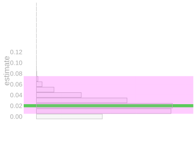
- On the left, the exact interval at each estimate we could get, and the rate we are supposing is true.
- On the right, the sampling distribution at that rate, with the estimates whose intervals cover it shaded.
- Same estimate axis, so the two line up.
- Count the samples inside the shaded band: that fraction is the coverage probability.
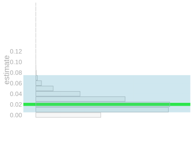
- The normal interval gives the same band here, estimates of 1% through 7%, so at this rate the two rules cover identically.
- Whatever rule we use, call its ends \ell(x) and u(x) when our estimate is x.
- Then coverage at \theta is
P\{\ell(\hat\theta)\le\theta\le u(\hat\theta)\} =\sum_x 1_{\ell(x)\le\theta\le u(x)}\,P(\hat\theta=x).
Where coverage fails
- Repeating the coverage calculation at every true rate, for the normal interval and the exact one.
- Both should sit at 95%, and across most of the range they do.
- The upright markers near the left edge are the three rates we imagined: 2%, 1% and 0.5%.
- Zoom in near zero and both fail, the normal and the exact alike, despite using different distributions.
- The same three rates, 2%, 1% and 0.5%, are the upright markers.
- The problem is not the distribution.
- It is shared by the plug-in construction.
Why a fingernail becomes a gap
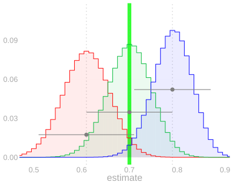
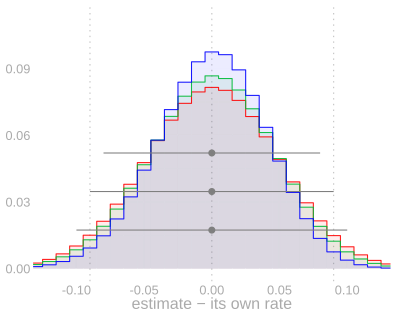
- First the example from class, a rate of 70%, nowhere near the boundary.
- The true rate sits in the middle, with the two ends of the middle 95% of its estimates in red and blue.
- In class: 95% of the time you get an estimate somewhere between the red and blue ones, so the width of your interval estimate is somewhere between the red and blue widths.
- The red interval does cover. The blue interval doesn’t. It’s a fingernail too narrow.
- Centred, on the right, the three distributions nearly coincide: away from the boundary, changing the rate mostly just moves the distribution.
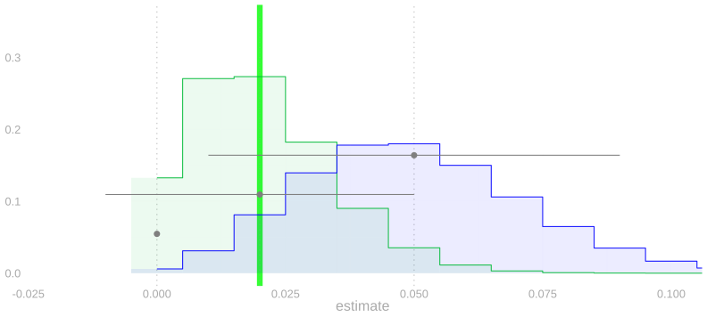
- Now our batch instead: the same picture, the same three rates in the same places, but at 2% rather than 70%.
- Everything that was mild in class is violent here. Underestimating the rate severely underestimates the width.
- The red edge has reached zero, and a zero estimate collapses the interval to a single point.
- That is the fingernail becoming a gap: in class the blue interval missed by a sliver; here the red interval misses by everything.
- And there is no centred picture to draw. Zero is a real place on this axis, and the pile-up against it is the whole problem.
Why the width changes so much
- Near zero, the normal width changes steeply with the rate; the tangents at 2% and 0.5% give its slope there.
- The exact width has discrete steps but the same sensitivity.
- The fainter lines in the same two colours are its secants over a quarter point either side, the discrete curve’s version of those slopes.
- Substituting an uncertain estimate for the true rate is consequential here.
\begin{aligned} w_n(\theta)&=2\cdot1.96\sqrt{\frac{\theta(1-\theta)}{n}},\\ w_n'(\theta)&=\frac{1.96(1-2\theta)}{\sqrt{n\theta(1-\theta)}}. \end{aligned}
A prior is a brittle repair
Can we get off the boundary?
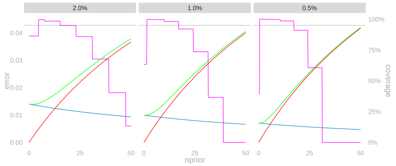
- Made-up prior observations pull the estimate off the boundary. One panel per true rate: 2%, 1%, 0.5%.
- They reduce standard error while introducing bias, and RMSE combines the two.
- Coverage is on the right-hand scale.
\tilde{Y}_{n^{\text{prior}}} = \frac{1}{n^{\text{prior}} + n} \left\{ n^{\text{prior}}\theta^{\text{prior}} + n\bar Y \right\}.
- Our sample rate of bad bottles is the sample mean \bar Y, and the prior mean is \theta^{\text{prior}}=13\%.
- A few prior observations fix the coverage the plug-in interval was losing near zero, and lower the error while they do it.
- Keep going and both collapse. By fifty prior observations the bias dominates, and at a true rate of 0.5% the interval covers essentially never.
What if the prior is wrong?
- The same calculation, now against the true rate out to 50%, for zero, five and twenty prior observations.
- A batch far from the prior mean of 13% exposes the bias.
- The apparent repair can then destroy coverage: the more prior observations, the sooner coverage collapses.
- Choosing a different prior after seeing the data creates a different procedure whose coverage must also be calculated.
Calibration gives a reliable rule
What we can guarantee
- At each possible true rate, we know the sampling distribution.
- We can choose arms containing at least 95% of the estimates it produces.
- Those widths require no guess about the observed sample.
- The same rule applies at every possible true rate, 3% included.

- That line is our own estimate, the 3% we actually observed.
- It stays put while we ask which rates could have produced it.
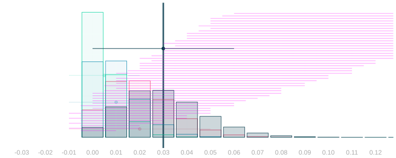
- Retain a rate when its arms contain our observed estimate.
- Whatever the true rate is, its own arms contain that estimate 95% of the time, so we retain it 95% of the time.
- Version A, as it stands. The arms get wider as the rate grows, so 21 of the 49 run off the right edge.
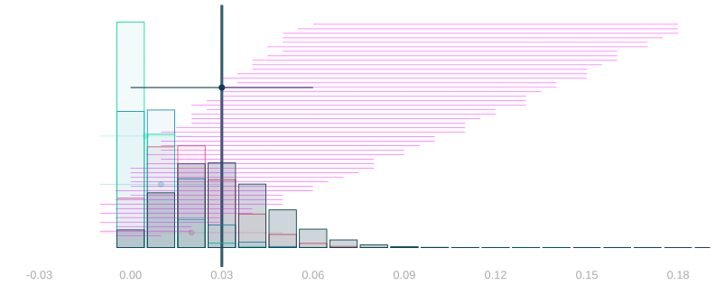
- Retain a rate when its arms contain our observed estimate.
- Version B, nothing clipped. The panel runs to 18% so the widest arms fit. The distributions get a third less room, and the earlier clicks in this sequence would have to use the same axis.
- Retain a rate when its arms contain our observed estimate.
- Version C, no staircase. The next slide, “Which rates could have produced our estimate?”, draws the arms at every rate against the rate itself, which is the same object with room to breathe.
Which rates could have produced our estimate?
- Reading across at a true rate, its lower and upper arm ends bracket at least 95% of the estimates it produces.
- The arms themselves are drawn at every whole percent, and the band is what they sweep out.
- The rate we are supposing is true is marked.
- Now read the other way.
- Our observed 3% cuts across the arms, and we retain every rate whose arms reach it.
- Whatever the true rate is, its own arms reach our estimate 95% of the time, so we retain it 95% of the time.
- We say the retained rates are our confidence set, and that is where its coverage guarantee comes from.
What the normal approximation buys us
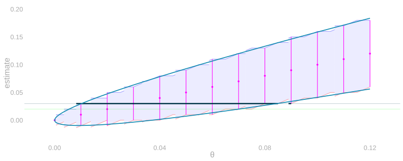
- The smooth normal arm ends replace the exact steps, and their crossings with our observed 3% give the interval endpoints.
- The exact arms stay behind them for comparison.
|\hat\theta-\theta|\le1.96\sqrt{\frac{\theta(1-\theta)}{n}}.
- Solving for the rate gives explicit endpoints, without substituting the estimate into the width.
\frac{\hat\theta+z^2/(2n)\ \pm\ z\sqrt{\hat\theta(1-\hat\theta)/n+z^2/(4n^2)}}{1+z^2/n}, \qquad z=1.96.
Does the approximate rule cover?
- Inversion repairs the plug-in problem: the exact rule never drops below 95%.
- The normal rule still inherits the normal approximation’s error, and near zero it falls short.
- An approximation’s actual coverage has to be checked against the sampling distribution, not assumed.
When the normal approximation works
- Plotted against the expected count n\theta, the normal rule’s coverage at 25, 100, 400 and 1,600 bottles falls on nearly the same curve.
- So accuracy near the boundary depends on the expected number of bad bottles, not on the sample size.
- A large sample with a tiny rate still has a small expected count.
- Sample size alone does not resolve the approximation error.
What the normal cannot capture
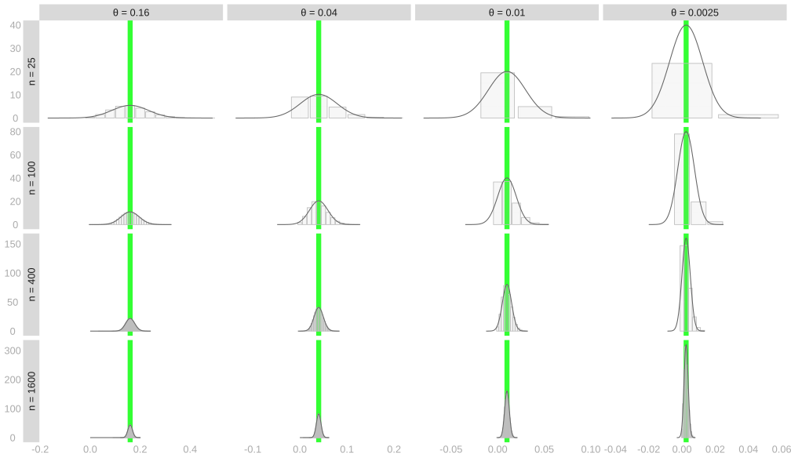
- The bars are the exact distribution of our estimate and the curve over each its normal approximation, at four rates across and four sample sizes down. The true rate is marked in each panel.
- Small counts accumulate near zero and cannot cross it, but the normal spreads probability over negative values.
- More expected bad bottles makes that boundary less important.
What Poisson preserves
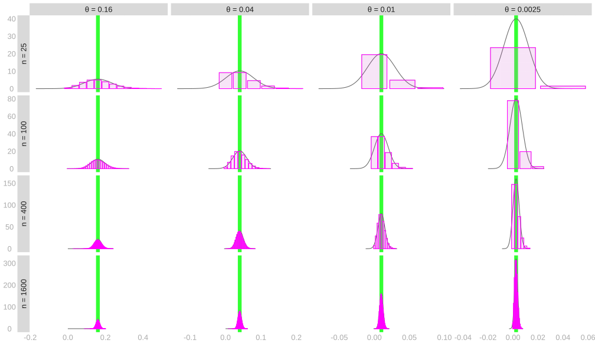
- The same grid, with the Poisson bars laid over the normal curve and the true rate in each panel.
- Poisson keeps what the normal loses: whole-number counts, and the boundary at zero.
- It is determined by the expected count alone.
P(S=k)\approx e^{-n\theta}\frac{(n\theta)^k}{k!}.
- An approximation suited to small bad-bottle rates when we sample a small fraction of the batch.
Why individual probabilities matter
- At a small expected count, Poisson tracks the exact distribution; the normal gives a very different probability of seeing no bad bottles.
- Reasonable interval coverage can conceal those differences.
- Planning a sample requires the relevant tail probability.
What do three bad bottles tell us?
- The calibrated procedure, applied to our 3%, retains rates below 1% and as high as 9%.
- The gap in the middle is real: discreteness leaves a few rates out, and we do not paper over it.
- The same three bad bottles among 100, 200 or 400 tested.
- More bottles with the same three bad ones make the estimate and both endpoints smaller together.
- The interval remains just as wide relative to the estimate.
What if we wanna know more?
How much more data?
- We can choose how many bottles to inspect before taking the next sample.
- Keeping our observed 3%, increasing the sample from 100 to 400 to 1,600 halves the normal interval width at each step.
- At 100 bottles the interval still runs below zero. Four times the data is what buys us an interval that does not.
- An extra decimal place of precision costs a hundred times the sample size.
Why the normal rule changes near zero
- The normal rule rescales the same distribution shape, so halving the standard error halves every width.
- At a 1% rate, going from 100 to 400 bottles moves the expected count from one to four, and the shape changes with it: piled against zero, then not.
- The normal approximation over each is drawn in that sample size’s own colour, and at an expected count of one it puts real probability left of zero, on counts of bad bottles that cannot happen.
- The new confidence limits and tail probabilities require the new distribution.
When the bounds tighten faster

- With the same three bad bottles, 100, 200 and 400 tested give Poisson rate intervals half as wide at each step.
- The upper limit falls faster than the normal square-root rule would suggest.
- This is good news for establishing that the rate is small; the calculation depends on how many bad bottles we find.
At what true rate?
- We define the design rate as the batch rate for which we want the procedure to work.
- Take the brewer’s design rate to be 1%.
- The bars are the counts a hundred bottles from such a batch can give us, and the curve over them is their normal approximation.
- Before collecting data, we account for every one of those counts — not just the three we observed before.
Enough data for a narrow interval
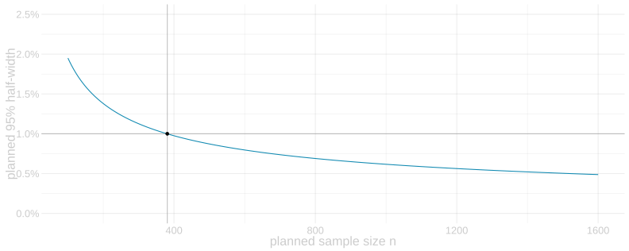
- The first question is precision.
- At the 1% design rate, ask for a 95% normal interval with half-width one percentage point.
n\ge\frac{1.96^2\,(.01)(.99)}{.01^2}\quad\Longrightarrow\quad n=381.
- This is the normal calculation; its accuracy still depends on the sampling distribution’s shape.
What no bad bottles tells us
- A warm-up, before the question we actually need answered.
- To plan for power we need the upper end of a one-sided interval.
- That calculation is easiest to see in the simplest case there is: we test n bottles and find none bad.
- Seeing none does not establish a zero rate.
- It rules out the rates that would have made it unlikely.
- The whole tail is a single term, so we can solve it by hand.
P(S=0)=e^{-n\theta}=.05\quad\Longrightarrow\quad\bar\theta=\frac{-\log(.05)}{n}\approx\frac3n.
- At a thousand bottles tested and none bad, the upper bound is about three tenths of a percent.
- Keep finding none and it falls in proportion to the number tested.
How high could the rate be?
- Now the general case: we found k bad bottles.
- Here is the whole count distribution at the bound we are looking for, and the upper bound \bar\theta is the rate at which seeing as few as we did becomes a 5% event.
- That shaded left-hand tail is the sum below.
P(S\le k)=\sum_{j=0}^{k}e^{-n\bar\theta}\frac{(n\bar\theta)^j}{j!}=.05.
- Our own three bad bottles in a hundred, written out, give four terms in n\bar\theta to solve for.
e^{-n\bar\theta}\left\{1+n\bar\theta+\frac{(n\bar\theta)^2}{2}+\frac{(n\bar\theta)^3}{6}\right\}=.05 \quad\Longrightarrow\quad n\bar\theta=7.75,\qquad\bar\theta=7.8\%.
- The warm-up was this with one term. Every count gives its own bound the same way, and power is about how often that bound lands where we need it.
Enough data for power
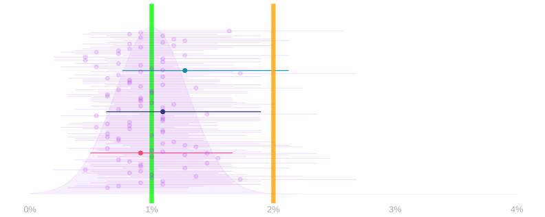
- The second question is power. Suppose the distributor hears about every bad bottle they ship — flawed, but it makes the target clean: the 2% standard is about the batch’s real rate, not anybody’s sample.
- The brewer has to establish, from bottles tested before shipping, that the rate is under that line. We succeed when our interval’s upper end falls below it, and power is how often we succeed for a batch that really is good.
- The power picture from class, set to the brewer: the sampling distribution of our estimate from a sample of 1,100 bottles drawn from a 1% batch, with a hundred of its two-sided 95% intervals and three picked out to follow through the next two clicks.
- A two-sided interval’s lower end does no work for us here, and it costs us half of our 5%.
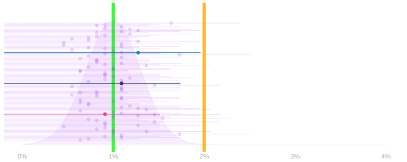
- So use one-sided intervals: the whole 5% goes on the end we care about, and every upper end comes down.
- We define power as the probability that our upper end falls below the standard.
- The normal calculation asks for 987 bottles to reach 80% of them.
n\ge\left\{\frac{1.645\sqrt{(.02)(.98)}+.842\sqrt{(.01)(.99)}}{.02-.01}\right\}^2.
- The same picture for Poisson, on the same axes: the count distribution in place of the normal mound, and every upper end built by solving the tail sum we just wrote down.
- Count the samples whose upper end falls below 2%.
- At 1,100 bottles that is about 85%, past our 80% target.
- Which raises a question we are going to leave alone for now: 1,100 is not the smallest sample size that gets us to 80%. 973 does. We will come back to why we did not take it.
What is this sawtooth?
Why the answer wasn’t smooth

- Here is the power of that procedure against the number of bottles, which is how we read the answer off in the first place.
- It does not climb smoothly. It first reaches our 80% at 973 bottles, then falls back below it.
- It only stays above 80% from 1,095 on, which is where our 1,100 came from.
- More data is not reliably better here, and that is worth understanding before we trust any sample-size answer.
Why the count moves in steps
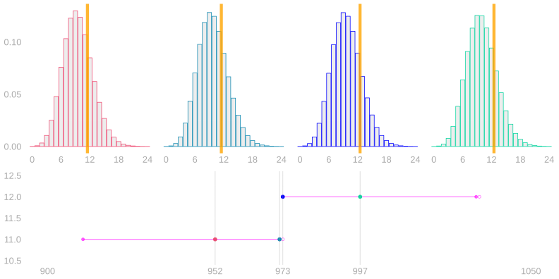
- Above, the count of bad bottles at 952, 972, 973 and 997 bottles tested, with the cutoff marked: the largest count whose upper bound still clears 2%.
- Below, that cutoff count against the number tested. It is a whole number of bottles, so it holds flat and then moves.
- It sits at eleven from 952 to 972 while the distribution slides out from under it.
- At 973 the arithmetic tips and it becomes twelve.
How steps become teeth
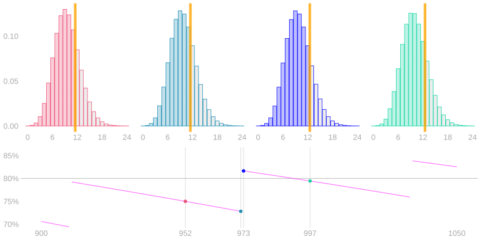
- Same four, with the counts that succeed now shaded: those are the samples whose bound clears 2%.
- While the cutoff holds at eleven, the distribution keeps sliding right, so less of it is shaded and power falls — from 952 to 972 it drops from 75% to 73%.
- When the cutoff moves to twelve at 973, a whole bar joins the shaded side and power jumps to 82%.
- Then it starts falling again. That is the tooth.
What the normal formula gives us
- The normal formula draws a smooth curve straight through the teeth, and answers 987 bottles.
n\ge\left\{\frac{1.645\sqrt{(.02)(.98)}+.842\sqrt{(.01)(.99)}}{.02-.01}\right\}^2.
- It is not wrong so much as blind: it cannot see that 987 sits inside the stretch where power keeps dipping back under our target.
So what do we do about it?
- Do not take the first sample size that reaches the target. Take the first one that stays there.
- For us that is 1,095, and 1,100 is a round number past it.
- The smooth formula is still how you find roughly where to look. The exact calculation is how you choose.
What the exact calculation changes
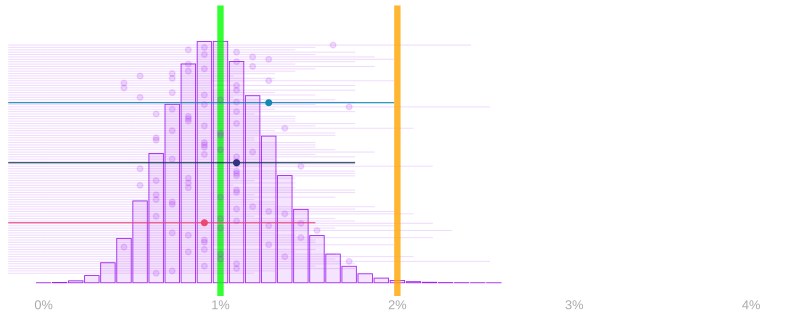
- Everything above used the Poisson approximation for the count. The hypergeometric is the truth, since we sample bottles without replacing them.
- The same hundred samples and the same three picked out, with the exact bound in place of the Poisson one: at 1,100 bottles the probability of establishing the batch meets the standard is about 85%, against our 80% target.
- The approximation got us the shape of the problem and the right neighbourhood. The exact calculation is what we commit to.